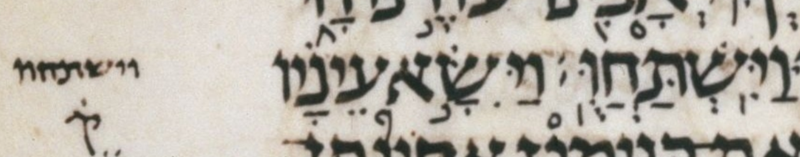

| bcv (link to tanach.us) | gn43:28 |
| MPK | וַיִּֽשְׁתַּחֲוֻּֽ׃ |
| qere | וַיִּֽשְׁתַּחֲוּֽוּ׃ |
| at issue | וּ |
| at issue English | changed a qubuts to a shuruq |
| folio col line | 027A 3 15 |
The qubuts in the MPK becomes a shuruq dot in the qere.
In WLC, this word has not only an a-note but also a 1-note, presumably because of the unexpected dagesh in the qere’s next-to-last vav.
As a reminder, a WLC 1-note (bracket-1 note) is defined as follows:
BHS has been faithful to ל [...] where there might be a question of the validity of the form and we keep the same form as BHS. (This is similar to the note “]U”, but the latter refers to cases where BHQ has been published and we keep the same form as both BHS and BHQ.)
Although Dotan has a note about this ketiv/qere, I do not take him to have noted it for the issue at hand: the qubuts-to-shuruq issue. I take him to have noted this ketiv/qere only for the unexpected dagesh in the last vav of the MPK. (This implies a dagesh in the qere’s next-to-last vav.)
I do not think Dotan finds the qubuts-to-shuruq issue notable because he does not note the similar ketiv/qere in gn27:29 words 3 and 4, וישתחו/וְיִֽשְׁתַּחֲו֤וּ. That gn27:29 ketiv/qere has the same qubuts-to-shuruq pattern as this one except the next-to-last vav of its qere is free of a dagesh, as expected, and therefore Dotan finds nothing notable about it.
We know that Dotan finds the dagesh notable because he notes gn27:29 word 10, וְיִשְׁתַּחֲוּ֥וּ, a normal (non-qere) word that is analogous to this qere, including having an unexpected dagesh in its next-to-last vav.